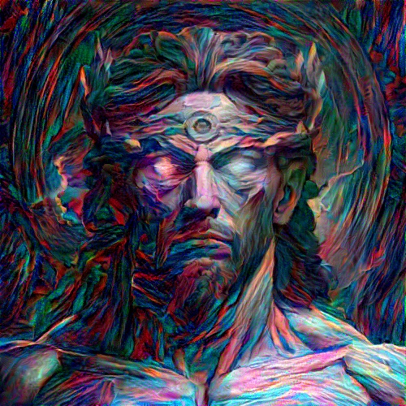
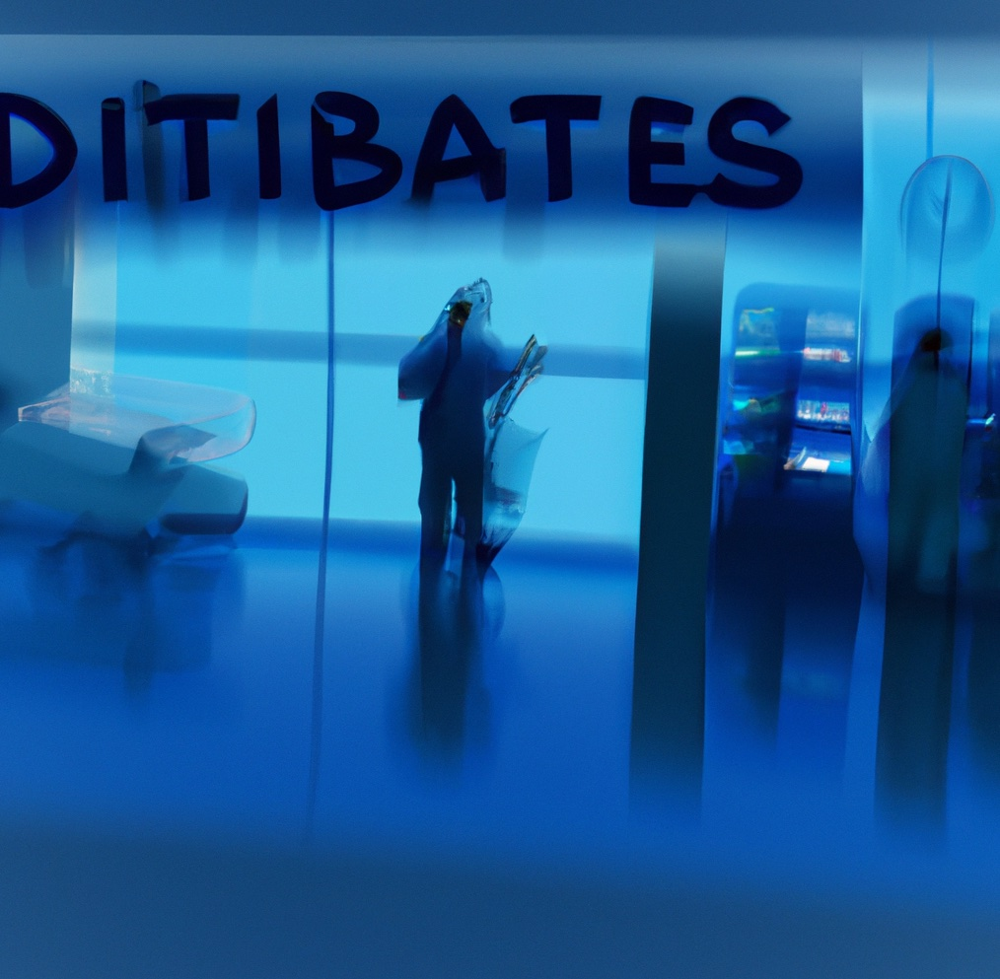
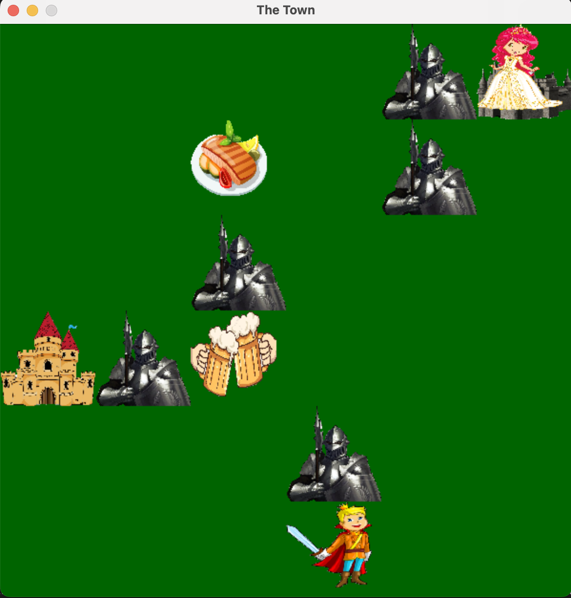

Greetings! I'm Saurabh Raj, an AI/ML Practitioner with a dynamic
journey through the realms of technology and innovation. Armed
with an MSc in Artificial Intelligence from City, University of
London and a B.Tech in Mechanical Engineering from the prestigious
Indian Institute of Technology, Jammu, my passion for harnessing
the power of AI knows no bounds.
My trajectory led me to create, innovate, and solve at Lumera,
London, where I currently craft a groundbreaking Code Generator
Language Model. This innovation reimagines problem-solving by
transforming questions into code solutions, woven together with
PyTorch, LLM, NLP, Javascript, and HuggingFace's brilliance.
Previously, at Accenture AI, Gurugram, I honed my expertise as a
Data Engineer. I navigated intricate data landscapes,
orchestrating transformations and engineering features from
diverse market sources. SQL, Apache Spark, Scala, and Azure's Big
Data platform fueled my journey, alongside a vibrant toolkit of
Kafka, Airflow, and Hadoop.
My footprint extends further to Truminds Software Sys, where I
thrived as a Software Engineer AI/ML. I orchestrated image
classification, object detection, and harnessed NoSQL databases to
create a robust vigilance system. My time as a Data Science Intern
further enriched my toolkit with NLP techniques and AWS Lex,
amplifying my capability to create a CRM recommendation chatbot.
Venturing beyond, I've earned accolades as a Microsoft Certified
Azure Fundamentals achiever and completed the Northwestern
University 101: Leading with Analytics and Artificial
Intelligence. Andrew Ng's revered Deep Learning Specialization
from DeepLearning.AI fuels my hunger for knowledge.
In this ever-evolving landscape, I thrive as an AI/ML
Practitioner, ceaselessly innovating, solving, and making my mark
on the frontiers of technology.
In this research-intensive endeavor, I present a pioneering
chatbot architecture designed and implemented from the ground up
using PyTorch. Leveraging state-of-the-art advancements in natural
language processing (NLP), my project integrates an innovative
fusion of techniques, including encoder-decoder architecture,
local and global attention mechanisms, as well as both
unidirectional and bidirectional encoders. This convergence of
methodologies aims to enhance the chatbot's contextual
understanding, fluency, and response coherence.
This project culminates in an AI-driven Road Damage Detection App,
underpinned by Pascal VOC formatted dataset. Initiating with an
exhaustive Exploratory Data Analysis (EDA) on a diverse global
dataset, it synergistically integrates state-of-the-art models -
YOLOv3, YOLOv5, and EfficientDet - for raod damage classification
such as Potholes, Alligator cracks, Linear Cracks, etc.
Operationalized via Flask, this pioneering app signifies the
confluence of advanced computer vision techniques and user-centric
deployment, ushering in a paradigm shift in AI-empowered road
safety enhancement.

Experience the art of image stylization through our ingenious
project. We've combined two powerful neural networks – a
Transformer and VGG16 – using a carefully designed process. We
tested various network setups, enhancing the process with both
ConvNets and ResNets. This fusion of classic and fast Neural Style
Transfer methods boosts efficiency and creativity. Our
user-friendly app, built with Node, React, and Flask, brings this
technology to your fingertips. Discover how this project improves
stylization quality and explores different network designs, making
deep learning and art come together seamlessly.

Pioneering predictive healthcare, my study revolves around early
diabetic patient readmission. Through supervised learning on a
comprehensive 50-feature dataset, I conducted insightful
exploratory analysis. Intricate feature engineering, spanning
categorical, textual, and numerical domains, was followed by
innovative web scraping-driven augmentation. Statistical analyses
and visualizations enriched our comprehension. Extensive model
comparison, including Random Forest, XGBoost, and Logistic
Regression, yielded an impressive ~97% AUC-ROC score. My research
underscores robust early readmission prediction, harmonizing
advanced feature engineering with prowess across diverse ML
models.

Introducing 'Save the Princess,' an innovative game developed
through Reinforcement Learning (RL). By defining a well-structured
environment and problem, I crafted a Q-learning framework with
state transition functions and reward mechanisms. Tuning
Q-learning parameters and policies, the algorithm demonstrated
remarkable performance. Experimentation with diverse parameter
values further enriched the outcomes, both quantitatively and
qualitatively. To elevate the project, I implemented Deep
Q-Network (DQN) with two enhancements, justifiably selected from
the literature, bringing state-of-the-art advancements to the
game. Additionally, I applied Reinforcement Learning algorithms to
the Atari Learning Environment, presenting both algorithm
rationale and results analysis. A comprehensive exploration into
RL's potential in diverse contexts.
Exploring the dynamic realm of time series data, I embarked on an ambitious stock price forecasting project. With an intricate dataset encompassing stock histories of 31 diverse companies, I tackled the challenge using advanced techniques.
Employing a custom data generator in PyTorch, I harnessed the 'Close' column data to predict closing prices. Transforming the problem into supervised learning, I formulated a window of data, enabling the model to learn from historical trends.
I pursued two distinct approaches: an MLP and an LSTM network. The MLP, fortified with Batch Normalization, yielded favorable outcomes after rigorous training. The LSTM network, with 5 layers and 512 hidden cells, emerged as the front-runner, surpassing the MLP in performance.
Throughout the journey, I experimented with sequence lengths, optimizers, and epochs, fine-tuning the models. The LSTM's prowess on test data underscores its potential for accurate stock price forecasting. Future avenues include exploring GRUs, RNNs, and tweaking hyperparameters for even more refined predictions.
In this project, I tackled the challenge of predicting company bankruptcies using an imbalanced dataset. Leveraging a comprehensive case study on a famous bankruptcy dataset, I employed three distinct methods to address the imbalance issue.
After thorough exploratory data analysis, I adopted a multi-pronged strategy. Using techniques like oversampling (SMOTE), undersampling, and ensemble decision trees, I designed a series of predictive models. In particular, Random Forest showcased exceptional performance, achieving an AUC score of 0.97. I explored various metrics such as precision, F1 score, and AUC, ensuring a balanced perspective.
The outcomes highlighted the significance of robust techniques for bankruptcy prediction, with ensemble methods delivering notable success. While this study presents impressive results, opportunities for future exploration include incorporating textual data using NLP techniques and experimenting with advanced neural network architectures.